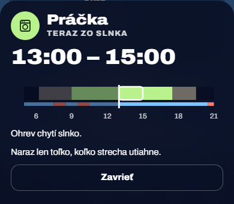
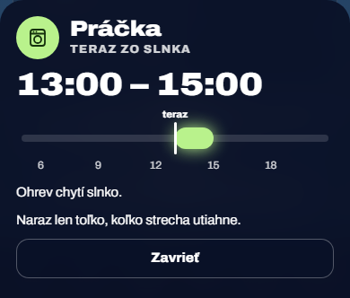
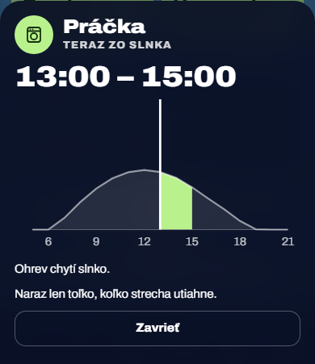
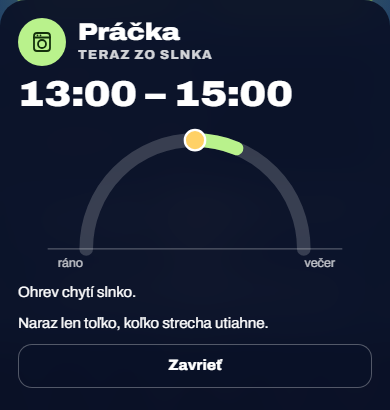
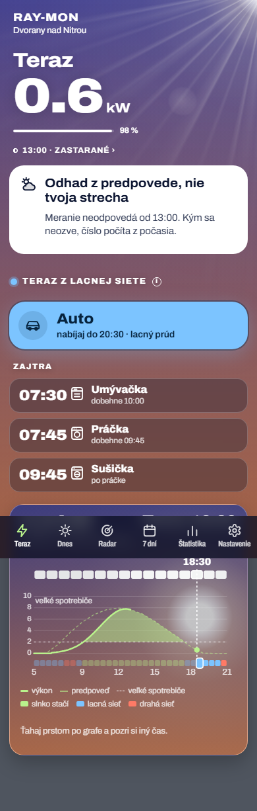
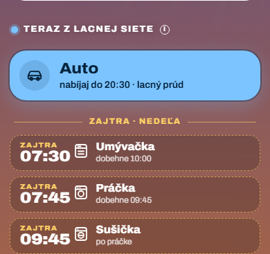
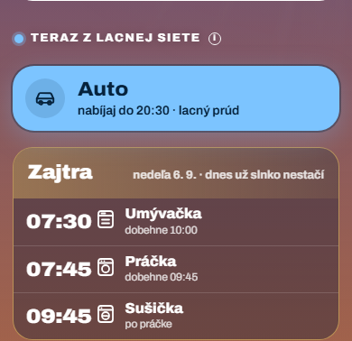
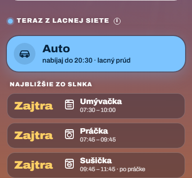
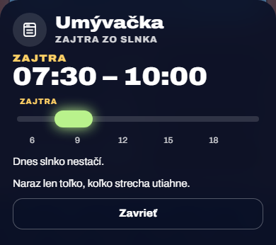

Karta Teraz – detail spotrebiča a odporúčanie na iný deň
Snímky sú zo skutočnej appky (fixtures testov, 5. 9. 2026 o 13:00 a 18:30) s ručne vloženými zmenami. Koniec sušičky „11:45“ vo variante 2C je vymyslený na ukážku. Vybrané 9. 11. 2026: 1A a 2B s pravidlami nižšie.
Bod 1Detail spotrebiča: grafika „kedy“
Pás so slnkom a sieťou a úsek spotrebiča s bielym obrysom nebol na prvý pohľad jasný. Čas od–do ostáva veľký v hlavičke, grafika ukazuje len polohu v dni.




A – os dňa s kapsulou
- najjednoduchšie, jasné na prvý pohľad, aj krátke okno je vidno
- nepovie, prečo práve vtedy
B – krivka s vyfarbeným úsekom
- vidno, že ide o vrchol slnka; ladí s kartou Deň
- viac kresby, večerné okno je nízke
C – oblúk slnka
- najviac obraz
- poloha na oblúku sa číta horšie, krátke okno je malé
Bod 2Odporúčanie na iný deň
Riadky zajtrajška vyzerali ako dnešné, len pod malým nadpisom „ZAJTRA“ – časy sa dali prečítať ako dnešné, hoci dnes už slnko nestačí.





A – deň pri každom čase
- nedá sa pomýliť ani pri jednom riadku
- „Zajtra“ sa opakuje, rušné
B – karta dňa
- hranica dneška je samostatný prvok, časy ostávajú čitateľné, karta pre každý deň
- trochu viac miesta
C – deň namiesto času
- oko prečíta najprv deň
- časy sa nedajú prebehnúť, opakovanie
Pravidlá
| 1 | Čas iného dňa nikde bez dňa: v karte dňa, v detaile („ZAJTRA“ nad časom), oznámenie už deň hovorí. |
|---|---|
| 2 | Detail veci na iný deň má tú istú os dňa ako dnešná, len bez čiary „teraz“. Úsek celý mimo osi (lacná sieť v noci) os nemá. |
| 3 | Keď zo slnka dnes už nič, riadok nad dlaždicami povie aj kedy ďalej: „Dnes už nič · zajtra od 07:30“. |
| 4 | Prvá karta iného dňa povie „dnes už slnko nestačí“ len vtedy, keď dnes zo slnka už nič nepôjde. |